Sex Development, Adrenal, Pituitary & Diabetes Drugs
Warm up with 20 questions to find your weak spots, work through the five topics (the step bar marks the ones you missed), then finish with a 40-question final. Every answer links back to the lecture it came from.
Warm-up quiz
Cold, no notes. It's a diagnostic, not a grade: your score per topic lands on the step bar and tells you where to spend the day.
Sex Development & CAH
Where normal differentiation breaks, the two big DSD groups, and congenital adrenal hyperplasia from the steroid pathway to the salt-wasting crisis.
- First two tests: karyotype + pelvic/abdominal ultrasound (uterus? gonads? big adrenals?). Use neutral words: gonads, phallus, labioscrotal folds.
- 46,XX overvirilized = CAH by a mile. 46,XY undervirilized = most often 5α-reductase deficiency (AR, high T:DHT) or partial androgen insensitivity (X-linked). Complete AIS looks female and is found at puberty.
- 21-hydroxylase (~95% of CAH): ↓ cortisol, ↓ aldosterone (75% salt-wasters), ↑ androgens. Low cortisol → high ACTH → hyperplasia. Diagnose with a high 17-OHP.
- Salt-wasting crisis at 1–3 weeks (low Na, high K, acidosis, hypoglycemia). Boys look normal at birth, so the newborn screen catches them.
- Treat for life: hydrocortisone 10–15 mg/m²/day divided + fludrocortisone (± salt) + stress dosing. Don't rush sex assignment; assignment ≠ surgery.
How it normally works
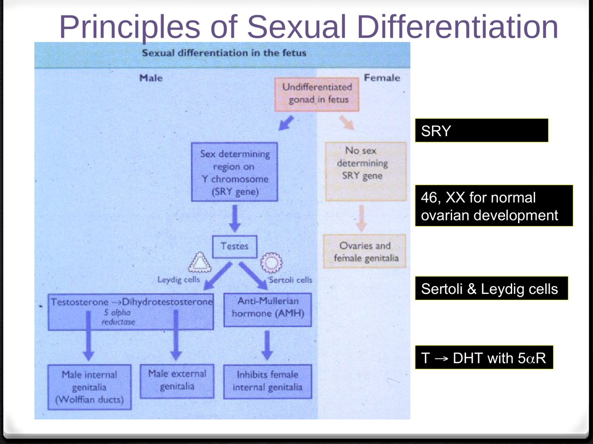
| Step | Does |
|---|---|
| SRY (on the Y) | Turns the gonad into a testis |
| Sertoli → AMH | Müllerian ducts regress: no uterus |
| Leydig → testosterone | Builds the internal male ducts (Wolffian) |
| 5α-reductase: T → DHT | Builds the external genitalia and prostate |
| No SRY | Ovaries and the female tract, but normal ovaries still need 46,XX |
The work-up
46,XY: the undervirilized male
| 5α-reductase deficiency | Partial AIS | Complete AIS | |
|---|---|---|---|
| Problem | T can't become DHT | Receptor partly works | Receptor doesn't work |
| Inheritance | Autosomal recessive | X-linked recessive | |
| Internal | Normal male; testes in abdomen, canal or folds | Testes | Testes; no uterus (AMH works) |
| At birth | Ambiguous | Ambiguous, micropenis or near-normal male | Looks like a typical girl |
| Puberty | Partial virilization; sparse beard, no acne or temporal recession | Incomplete virilization, gynecomastia, azoospermia | Found here: no periods |
| Diagnosis | High T:DHT after hCG | DNA analysis of the androgen receptor gene | |
CAH: follow the block
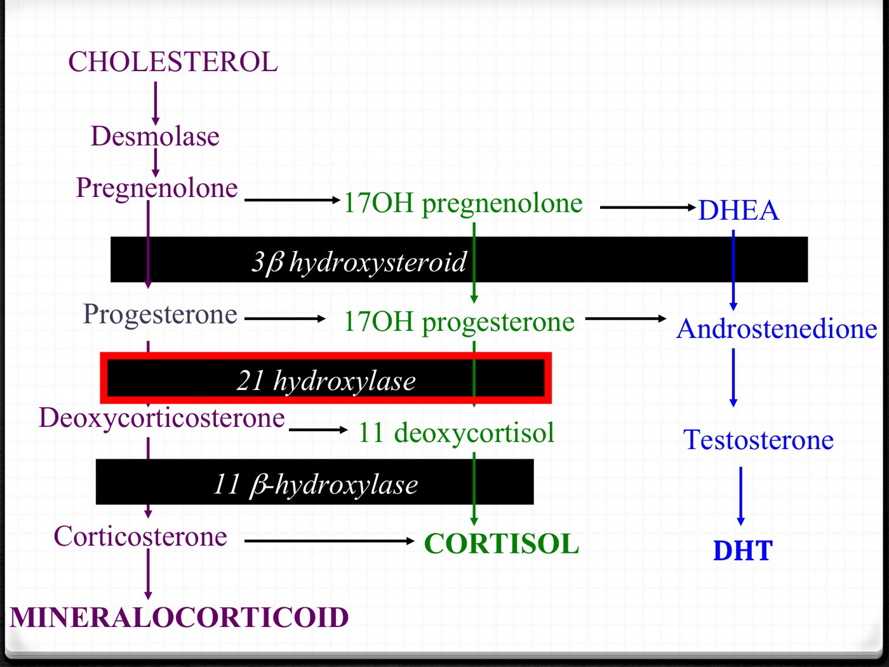
| 21-hydroxylase | 11β-hydroxylase | |
|---|---|---|
| Share of CAH | ~95% | ~5% |
| Cortisol | ↓ | ↓ |
| Aldosterone | ↓ (salt-wasting) | — but DOC ↑ acts like it |
| Androgens | ↑ virilization | ↑ virilization |
| Blood pressure | Low (crisis) | High |
| Marker | ↑↑ 17-OHP | 11-deoxycortisol, DOC |
| 21-OHD type | Enzyme left | Cortisol / aldosterone | Presents |
|---|---|---|---|
| Classic salt-wasting (75%) | < 1% | Both deficient | At birth or in a salt-wasting crisis |
| Classic simple virilizing (~25%) | 1–5% | Cortisol deficient; aldosterone enough | Virilization |
| Non-classic | More | Adequate | Premature pubarche; later hirsutism, acne, oligomenorrhea: a PMOS mimic (check 17-OHP) |
Management and sex assignment
| Piece | Details |
|---|---|
| Glucocorticoid, for life | Hydrocortisone 10–15 mg/m²/day in 2–3 doses (least growth-suppressing); prednisone or dexamethasone once growth is done |
| Mineralocorticoid (salt-wasters) | Fludrocortisone 0.05–0.2 mg daily; infants may need extra salt |
| Stress dosing | More glucocorticoid in illness, to prevent a crisis |
| Diagnosis | Identity outcome |
|---|---|
| 46,XX CAH, assigned female | ~90% identify female |
| 46,XY CAIS, assigned female | 100% identify female |
| 46,XY 5α-RD, assigned female | ~60% identify male (they virilize at puberty) |
| PAIS, synthesis defects, dysgenesis | ~25% gender dissatisfaction either way |
Adrenal
Too little (primary vs secondary, the crisis, stress dosing), then too much: aldosterone, catecholamines and cortisol, plus the incidentaloma.
- The zone tells you the disease. Glomerulosa → aldosterone → Conn. Fasciculata → cortisol → Cushing. Medulla → catecholamines → pheo. Only the glomerulosa is off the ACTH circuit.
- Primary = gland failed: cortisol and aldosterone go, ACTH climbs → pigment, hyperkalemia. Secondary = signal failed (usually steroids): aldosterone kept, no pigment, no high K.
- Crisis: fluids + hydrocortisone 100 mg IV on suspicion, before any result. Stress dosing: rule of 3s; injection if vomiting.
- Aldosterone excess: resistant HTN + low K, no edema → aldosterone : renin ratio, confirm, then CT + adrenal vein sampling.
- Pheo: plasma free metanephrines; alpha before beta; never biopsy. Cushing: two positive screens, then ACTH. Commonest cause overall: exogenous steroid.
One gland, four products
| Layer (outside → in) | Makes | Controlled by | Too much |
|---|---|---|---|
| Zona glomerulosa | Aldosterone (salt) | Renin–angiotensin II and K⁺, not ACTH | Conn (primary hyperaldosteronism) |
| Zona fasciculata | Cortisol (sugar) | ACTH | Cushing |
| Zona reticularis | Androgens (sex) | ACTH | Virilization |
| Medulla | Catecholamines | Sympathetic fibres | Pheochromocytoma |
Adrenal insufficiency: primary vs secondary
| Primary (Addison's) | Secondary (central) | |
|---|---|---|
| Cortisol | ↓ | ↓ |
| ACTH | ↑↑ | ↓ / "normal" |
| Aldosterone | ↓ (renin ↑) | Preserved |
| Na | ↓ salt wasting + ADH | N or ↓ (dilutional) |
| K | ↑ | Normal |
| Pigment, salt craving | Yes | No |
| Main cause | Autoimmune (80–90%); also TB, mets, hemorrhage, CAH | Exogenous steroids |
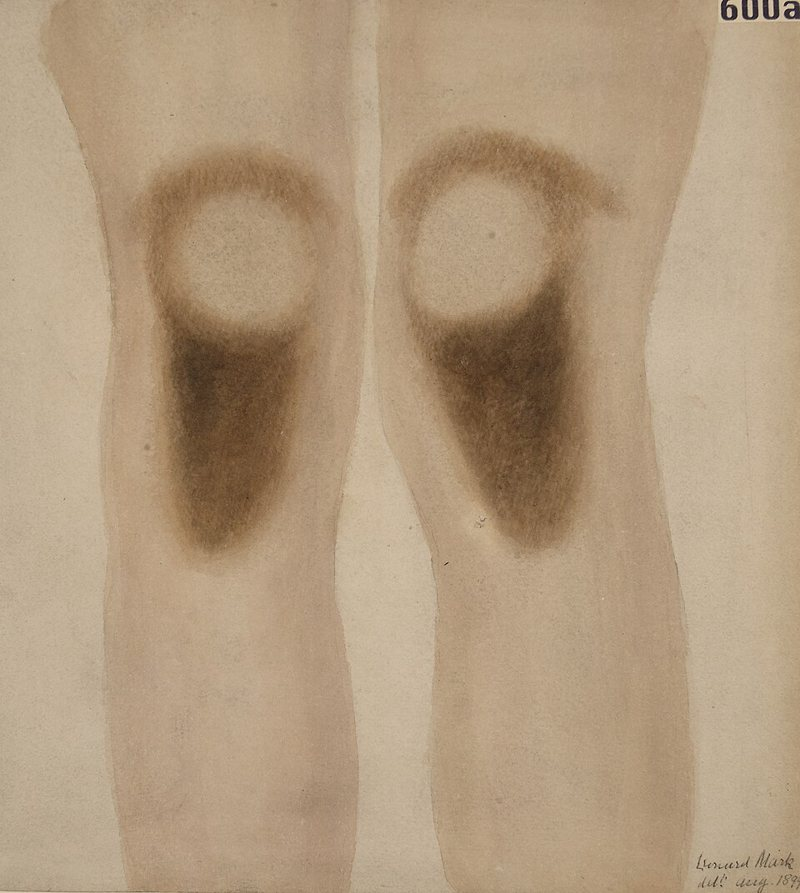
Other clues: hypoglycemia, high calcium, pre-renal creatinine rise, eosinophilia and lymphocytosis. About 40% of Addison's comes with a polyglandular autoimmune syndrome, so check a TSH.
Diagnosis: cortisol first, ACTH second
| 6–9 AM serum cortisol | Means |
|---|---|
| > 450 nmol/L | Ruled out |
| 80–450 | Indeterminate → 250 µg cosyntropin test (normal: rise > 450) |
| < 80 | Diagnostic |
| Then ACTH: high = primary, low or inappropriately normal = secondary. Stop estrogen 6 weeks before (it raises CBG). | |
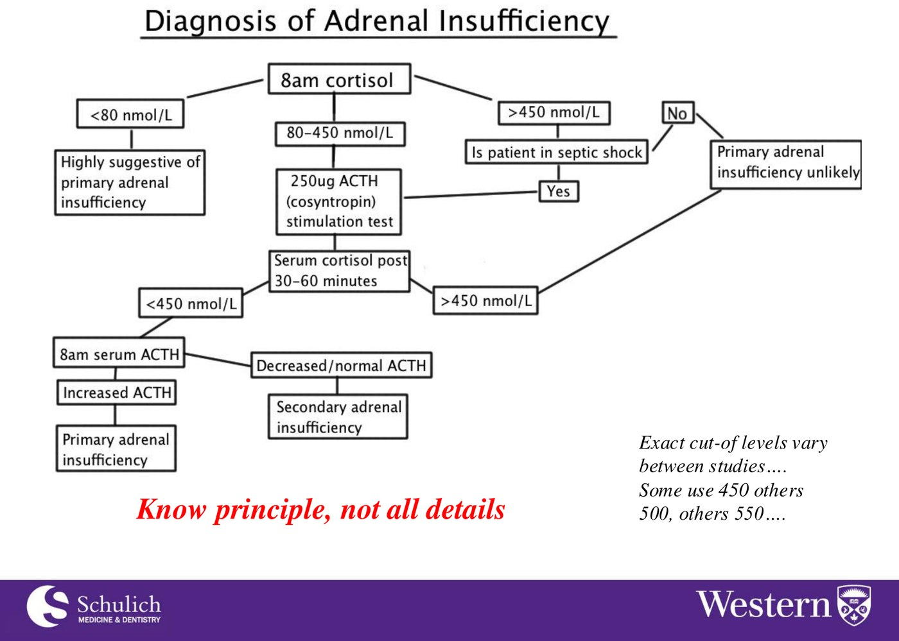
The crisis, stress dosing and replacement
- ABCs: it's shock first.
- Send lytes and glucose (cortisol and ACTH only if it costs no time).
- 2–3 L NS with dextrose, two large-bore IVs.
- Hydrocortisone 100 mg IV, then 50–100 mg q6–8h (covers the mineralocorticoid side too).
- Find the precipitant; add fludrocortisone once the dose comes down.
| Situation | Do |
|---|---|
| Flu, fever | Rule of 3s: triple the dose for 3 days |
| Vomiting, severe diarrhea | Injection, not tablets |
| Surgery | Hydrocortisone 50–100 mg 1 h before, then q6–8h |
| Chronic | Hydrocortisone 10–20 mg AM + 5–10 mg PM; fludrocortisone 0.05–0.1 mg (often not needed in secondary) |
Too much aldosterone
| Pattern | Aldo | Renin | Ratio |
|---|---|---|---|
| Primary | ↑ | ↓ | ↑ |
| Secondary (RAS, diuretics, HF) | ↑ | ↑ | Normal |
| Essential HTN | N | N | N |
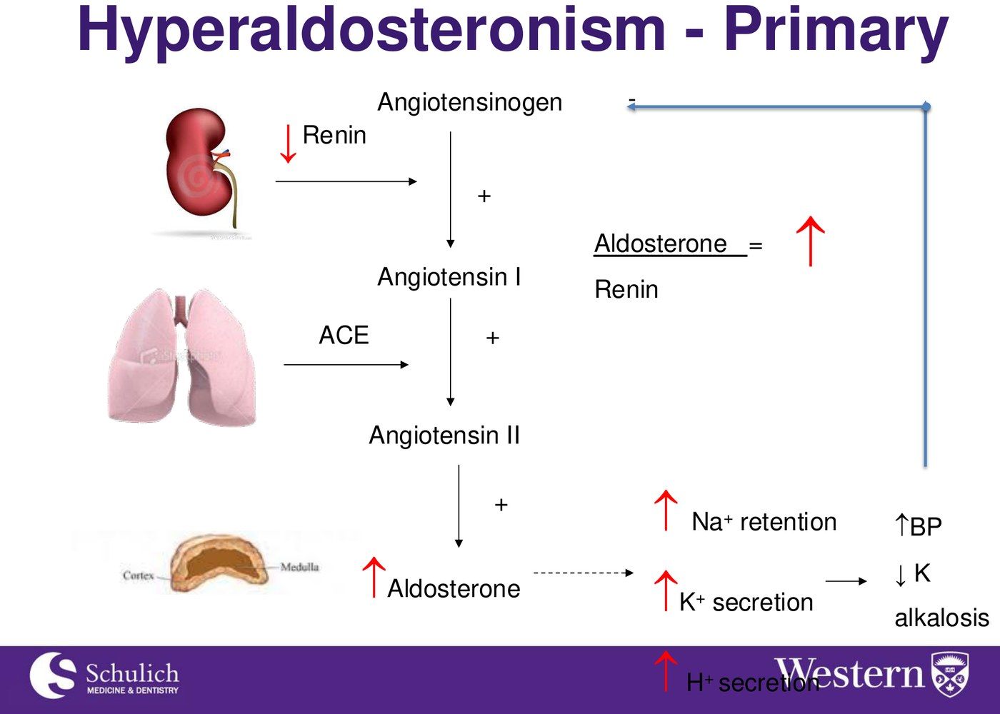
Who to test: HTN on > 3 drugs, low K (spontaneous or thiazide-induced), HTN with an incidentaloma. It's 5–10% of all hypertension. Order: ratio → confirm non-suppression (2 L saline, fludrocortisone or salt load) → adrenal CT → adrenal vein sampling decides the side. Unilateral → adrenalectomy; bilateral → MRA.
Pheochromocytoma and the incidentaloma
Triad: headache, palpitations, sweating (with pallor), in spells; or sustained HTN with orthostatic hypotension (contracted volume). Also test: a paradoxical BP response to anaesthesia, and new diabetes in a young, lean, hypertensive patient.
- Test: fractionated plasma free metanephrines (99% sensitive). Metanephrines leak out continuously; catecholamines come in bursts.
- Alpha first (phenoxybenzamine, doxazosin), then beta. Beta first leaves alpha unopposed: hypertensive crisis. Labetalol acts mostly as a beta-blocker.
- Never biopsy an adrenal mass until pheo is excluded (70% complications).
- 30–40% are familial (MEN2, VHL, NF1, SDH): offer genetic testing to everyone.
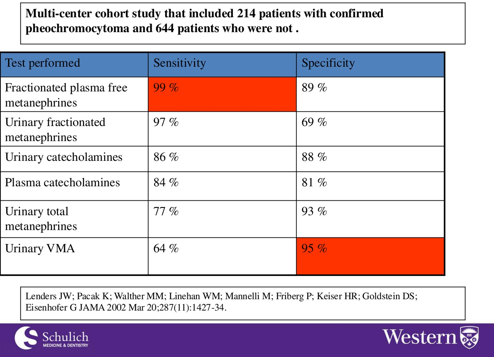
| Incidentaloma: two questions | How |
|---|---|
| Is it functioning? | Cortisol: 1 mg overnight DST · aldosterone: BP, K, then ratio · catecholamines: metanephrines |
| Is it malignant? | Unenhanced CT: ≤ 10 HU and homogeneous = benign adenoma · 11–20 HU and < 4 cm = indeterminate · ≥ 4 cm, heterogeneous or > 20 HU = malignancy risk. With known cancer, 75% are mets. |
Cushing syndrome
| What's wrong | Screening test | Suggests Cushing |
|---|---|---|
| Too much cortisol | 24 h urine cortisol | > ULN (> 4× = Cushing) |
| Lost rhythm | Late-night salivary cortisol | > 4 nmol/L |
| Lost suppression | 1 mg overnight DST | 8 AM cortisol > 50 nmol/L |
Two positive screens make the diagnosis. Then ACTH: suppressed = adrenal; normal or high = pituitary (Cushing disease, 60–80% of endogenous) or ectopic. Always ask about steroids first, including inhaled, topical and injected.
| Best signs | LR+ |
|---|---|
| Ecchymoses | 10–11.3 |
| Osteopenia / fracture | 8–13.8 |
| Proximal weakness (failed squat) | 8–12.6 |
| Purple striae > 1 cm | 2.7–2.9 |
| Obesity | 1.75–3.1 (near the bottom) |
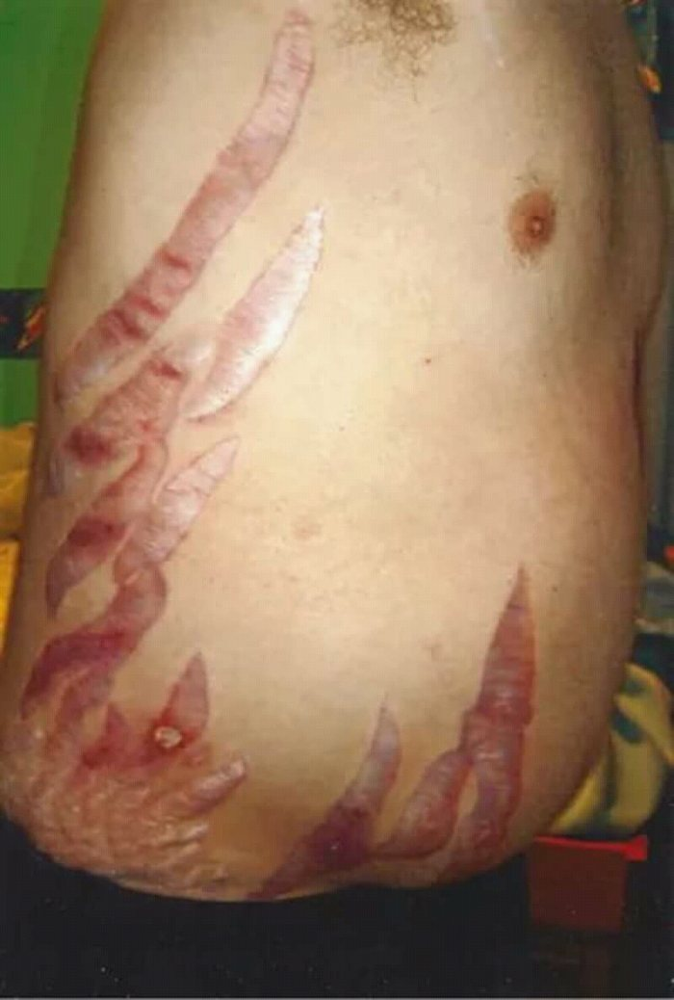
Pituitary
Mass effect, working through each axis, the "inappropriately normal" trap, and the three secreting tumours: ACTH, prolactin and GH.
- Two sets of questions for every pituitary patient: mass effect (fields, diplopia, headache, apoplexy) and each hormone axis, one at a time. Deficiency can be partial.
- A "normal" TSH means nothing in pituitary disease. Free T4 5 with TSH 4.11 = central hypothyroidism. For deficiency, measure the target hormone.
- Steroid before thyroxine, or you can precipitate an adrenal crisis.
- Prolactinoma: dopamine agonist first (cabergoline), even for macroadenomas. Check pregnancy, TSH and drugs first.
- Acromegaly: IGF-1 → OGTT (GH should fall < 1) → MRI. 12-year delay. Surgery is primary.
The axes, and the mass
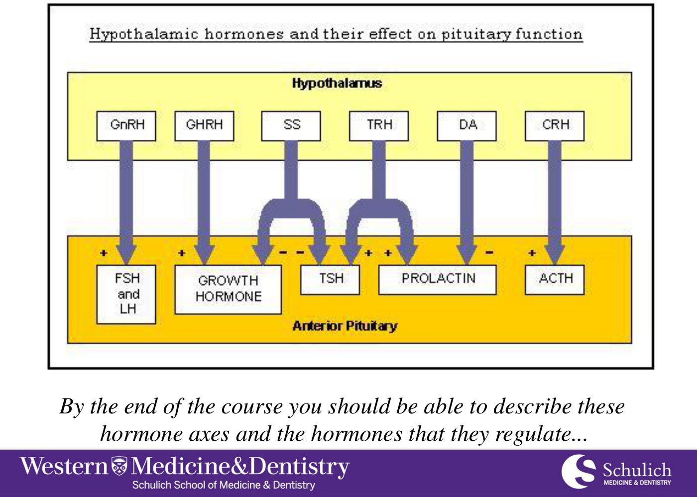
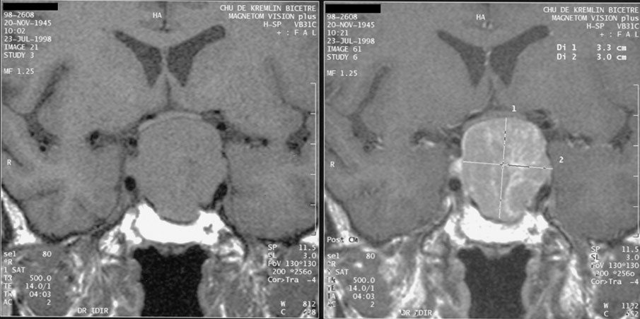
The chiasm's crossing fibres are the nasal retinal fibres, which see the temporal fields. Press from below and both temporal fields go. Lateral spread into the cavernous sinus gives diplopia (CN III, IV, VI). Apoplexy (bleeding into the gland) is an emergency. MRI beats CT.
Deficiency: one axis at a time
| Axis | Looks like | Measure | Replace |
|---|---|---|---|
| Adrenal | Fatigue, weight loss, hypotension, hypoglycemia; no pigment, no high K | 8–9 AM cortisol: < 100 confirms, > 450 excludes, else stimulation test | Hydrocortisone + stress-dose teaching, first |
| Thyroid | Cold intolerance, dry skin, bradycardia, constipation | Free T4 (TSH low, normal or mildly up) | Levothyroxine, dosed on free T4 |
| Gonadal | Low libido, less shaving, amenorrhea, hot flashes | LH, FSH with the sex steroid | Testosterone (doesn't restore fertility) |
| GH (adult) | More fat, less lean mass, poor exercise capacity | IGF-1; ITT or glucagon stimulation | A delayed decision |
| Posterior (AVP) | Diabetes insipidus | Separately | — |
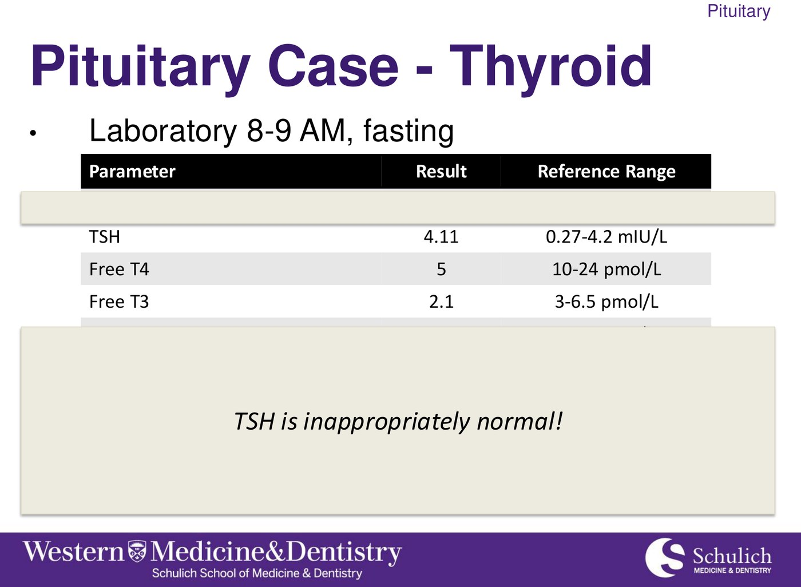
Prolactin
| Prolactin (µg/L) | Effect |
|---|---|
| < 20 | Normal |
| 20–50 | Low progesterone, short luteal phase (trouble conceiving) |
| 50–100 | Oligo- or amenorrhea |
| > 100 | Overt hypogonadism, low estradiol |
Causes: prolactinoma, pregnancy, primary hypothyroidism (TRH drives lactotrophs), drugs (metoclopramide, haloperidol, domperidone, chlorpromazine; also verapamil, methyldopa, estrogen), stalk compression, renal failure, stress, macroprolactin. Work-up: prolactin, LH/FSH, sex steroid, TSH and a pregnancy test.
Treat with a dopamine agonist (cabergoline > bromocriptine), even macroadenomas: it shrinks the tumour. Surgery only if it fails. Women: 95% microadenomas. Men: later, bigger tumours.
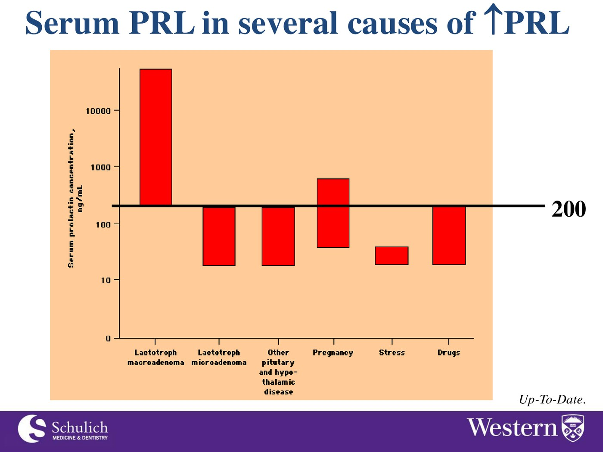
Growth hormone and ACTH excess
| Acromegaly (GH) | Cushing disease (ACTH) | |
|---|---|---|
| Clues | Ring, glove and shoe size up, frontal bossing, gaps between teeth, carpal tunnel, sweaty oily skin, new DM and HTN | Bruising, proximal weakness (failed squat), osteopenia, striae |
| Screen | IGF-1 (GH is pulsatile) | 2 of: 24 h UFC, late-night salivary, 1 mg DST |
| Confirm / locate | OGTT: GH fails to fall < 1 µg/L → MRI | ACTH normal/high → MRI (80–90% micro; 40% invisible) |
| Treat | Transsphenoidal surgery; somatostatin analogues, pegvisomant, radiotherapy | Surgery (ketoconazole meanwhile); steroids after; 20% recur |
Diabetes Drugs & Insulin
Where each class acts, the ADR that follows from it, who can't have it, renal dosing, and how insulin structure sets its timing.
- Metformin lactic acidosis = acute illness / volume depletion + renal impairment, not just "any CKD".
- TZDs: absolutely contraindicated in heart failure and liver dysfunction.
- SGLT2i: not for T1DM (DKA, including euglycemic DKA); weight loss; sick-day hypovolemia; genital infections.
- GLP-1 RAs: no MTC, MEN2 or pancreatic cancer. DPP-4i don't carry that warning; linagliptin needs no renal adjustment.
- Dialysis: insulin is essentially the only fully usable agent. Only the insulin monomer works; regular is the IV insulin; pumps use rapid-acting only.

Every class, side by side
| Class | How | Hypo risk / weight | Watch for | Avoid in |
|---|---|---|---|---|
| Metformin | ↑ AMPK, ↓ gluconeogenesis | Low / neutral | GI upset, ↓ B12, lactic acidosis (rare) | eGFR < 30; acute illness |
| TZD (pioglitazone) | PPARγ | Low / gain | Fluid retention, ↓ BMD, fractures | HF, liver disease, bladder cancer |
| Sulfonylurea | Close β-cell K⁺/ATP channel | High / gain | Interactions; glyburide's renal metabolites | Renal/hepatic failure, pregnancy, elderly |
| Meglitinide (repaglinide) | Same channel, other site; short | Lower / gain | With meals, TID | Caution in liver disease |
| GLP-1 RA (semaglutide) | Glucose-dependent insulin, ↓ glucagon, slow emptying | Low / loss | GI effects, pancreatitis | MTC, MEN2, pancreatic cancer |
| DPP-4i (-gliptin) | ↑ endogenous GLP-1 | Low / neutral | Joint pain; saxagliptin HF signal | — (no MTC warning) |
| SGLT2i (-flozin) | ↑ urinary glucose and Na | Low / loss | Genital infections, hypovolemia, amputation, fracture | T1DM, dialysis |
| Acarbose | Slows carb digestion | Low / neutral | Flatulence | IBD, IBS, obstruction |
| Renal | As eGFR falls | Dialysis |
|---|---|---|
| Metformin | Reduce < ~45 | Avoid |
| Sulfonylureas | Avoid glyburide early | Avoid |
| DPP-4i | Reduce sita/saxa; linagliptin none | Linagliptin OK |
| SGLT2i | Efficacy falls; continue for cardiorenal benefit | Avoid |
| Pioglitazone | No change | No change |
| Insulin | May need less (renal clearance) | Usable |
Insulin
| Insulin | Onset | Duration |
|---|---|---|
| Lispro / aspart / glulisine | 5–15 min | 3–6 h |
| Fast-acting aspart | ~2.5 min | As aspart |
| Regular | 30–60 min | Longer tail |
| NPH | 3–4 h | 10–16 h (more nocturnal hypos) |
| Detemir | 0.5–1 h | 16–24 h |
| Glargine | 2–4 h | 20–24 h |
| Degludec | 0.5–1.5 h | > 42 h |
| Icodec | Once weekly (t½ ~196 h); missed doses matter | |

- Only the monomer activates the receptor; onset = how fast hexamers dissociate.
- Regular insulin is the IV insulin. IV is fastest, then IM, then SC.
- Endogenous insulin is cleared by the liver; injected insulin by the kidney, so renal impairment prolongs it.
- Pumps: rapid-acting only, never basal. Most basals shouldn't be mixed with other insulins.
- ADRs: hypoglycemia (most common), weight gain, lipohypertrophy (rotate sites), rare allergy (to additives).
DKA & HHS
Two questions to separate them, the sodium and potassium traps, one shared treatment, and how to stop the next one.
- DKA: pH ≤ 7.3, gap > 12, ketones positive; young T1DM, hours; vomiting, abdominal pain, Kussmaul breathing.
- HHS: pH > 7.3, glucose > 30, osmolality > 320, little or no ketones; older T2DM, days; no abdominal pain or vomiting; bigger water deficit (~9 L vs ~6 L).
- Potassium: a normal or high serum K hides a total-body deficit. Insulin drops it, sometimes sharply.
- Sodium is usually falsely low: correct it for the glucose.
- Treat: ABCs → NS (litres) → IV insulin → monitor q1–2 h → add dextrose at glucose 12–14 and keep the insulin going until the gap closes. Always ask why it happened.
| DKA | HHS | |
|---|---|---|
| Who / how fast | Younger, T1DM (absolute deficiency) · hours | Older, T2DM (relative deficiency) · days |
| pH | ≤ 7.3 | > 7.3 |
| Glucose | > 15 (not always) | > 30 |
| Bicarbonate | < 18 | > 15 |
| Ketones | Positive | Negative or trace |
| Anion gap | > 12 | < 12 |
| Osmolality | Variable | > 320 |
| Water deficit | ~6 L | ~9 L |
| At the bedside | Vomiting, abdominal pain, Kussmaul, acetone breath; cerebral edema risk in kids | Lethargy to obtundation; no pain, vomiting or hyperventilation |
Why no ketones in HHS? Enough insulin is left to suppress lipolysis and ketone formation, just not enough to prevent hyperglycemia.
Treatment, the same for both
- ABCs.
- Normal saline, often many litres.
- IV insulin: always in DKA, almost always in HHS.
- Monitor every 1–2 h: consciousness, Na, K, pH, volume status and heart-failure risk; glucose hourly on the drip.
- At glucose ~12–14: add dextrose (D5W with NS) and keep the insulin running until the acidosis resolves and the gap closes.
Precipitants and prevention
Both: dehydrating illness (gastroenteritis, flu); stress (sepsis, MI, stroke, surgery, thyrotoxicosis, trauma); not accessing medication (cost, rationing); drugs (steroids, SGLT2 inhibitors, cocaine). DKA only: insulin withheld on purpose, e.g. for weight control.
Euglycemic DKA: on an SGLT2 inhibitor the glucose can look near-normal, which is why they aren't used in T1DM.
| T1DM sick days | T2DM sick days |
|---|---|
| Keep some insulin even when not eating (usually less basal) | Monitor often |
| Check glucose and urine ketones often | Stop dehydrating drugs in GI upset: SGLT2i, diuretics, metformin |
Final quiz
40 new questions, mostly clinical vignettes like the progress test. Your results compare each topic with your warm-up.